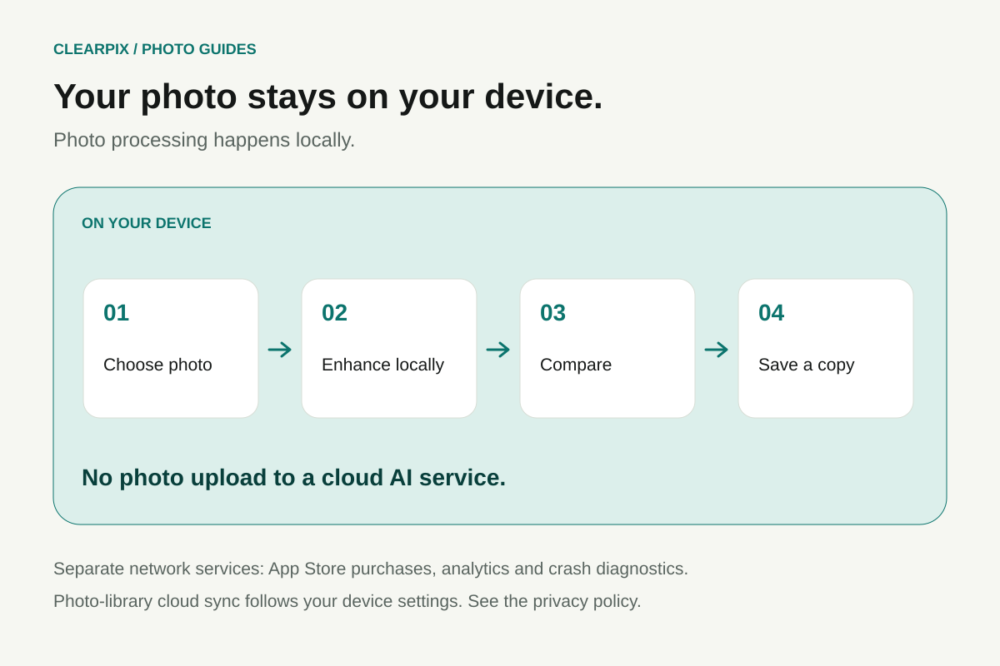

You hesitate at the upload button
Local image processing keeps your photo out of a cloud enhancement queue.
A family portrait. A quiet moment at home. A picture you simply want to keep to yourself. ClearPix enhances photos on your iPhone, so improving an image can stay part of your own private routine.
Local image processing keeps your photo out of a cloud enhancement queue.
With the app and full source image available on your device, enhancement can run offline.
Choose, enhance, and save. There is no account to create for photo processing.
Make sure the full image is available locally, especially before going offline.
Run AI Enhance or Low-Light on your device.
Compare and export to your photo library. Library syncing follows your own device settings.

Your portraits and family memories stay in a local enhancement workflow. Choose a photo, enhance on your iPhone, compare, and save. Learn more about app services in our privacy policy.
Yes. When the app and full source photo are available on your device, the local enhancement can run offline.
The image models run on your iPhone. Save the enhanced copy to your own photo library.
You can choose, enhance, compare, and save a photo without creating an account.
The privacy policy explains local photo processing and the separate app services for purchases, analytics, and diagnostics.
Bring a favourite picture into ClearPix and enhance it on your own iPhone.
Download on the App StoreBy the ClearPix team · Contact support